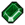

Miner
You're a true miner. You sometimes get extra ore when mining. You might even find a gem... or not.—speaker
Miner is a Keeper perk available in the Metallurgy talent tree.
Prerequisites
 Red mastery +1
Red mastery +1
Effects
+1  Copper Nugget from the copper vein
Copper Nugget from the copper vein
20% chance to get
+1  Iron Ore from a iron deposit
Iron Ore from a iron deposit
|